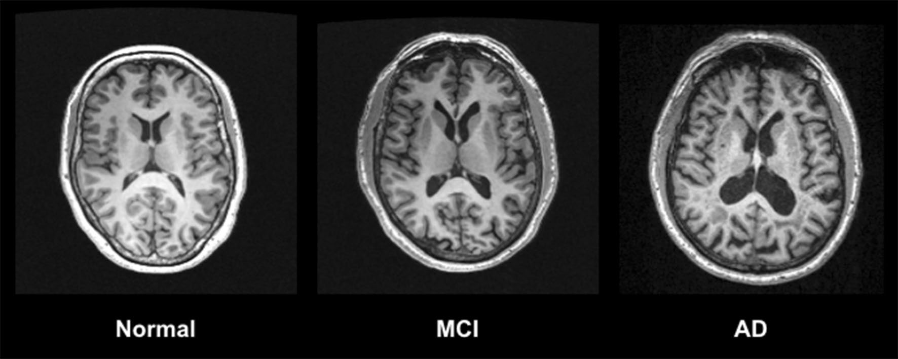

The 12.6-year gap between a clean midlife and a maxed-out one
A 26-year study of 12,409 adults in four US communities found that arriving at midlife with none of three vascular risk factors was linked to 12.6 more years of life free of dementia, and the biology explains why the brain cares so much about its smallest blood vessels.

Average dementia-free years from age 55 to 95, by midlife risk factors
The clean-midlife group kept 12.6 more dementia-free years than the group carrying all three. Each bar is that group's average across the 40-year window from 55 to 95.
The head start you can measure in years
Most advice about protecting your brain stays fuzzy about the payoff. A study published August 5, 2026 in Neurology Open Access puts a hard number on it instead. People who reached age 55 with none of three common vascular risks, which are high blood pressure, diabetes, and current smoking, averaged 30.1 dementia-free years between 55 and 95. People who carried all three averaged 17.5. That is a gap of 12.6 years, and much of it traces back to the brain's smallest blood vessels.
The study came out of ARIC, the Atherosclerosis Risk in Communities project. Researchers led by Jiaqi Hu and Josef Coresh followed 12,409 adults in four US communities, average age 56 at the start, for a median of 26.3 years. They counted how many of the years between ages 55 and 95 each person spent alive and free of dementia, then sorted people by how many of the three risk factors they carried in midlife.
The middle groups fell in an orderly line, with 26.3 dementia-free years for one risk factor and 21.0 for two, and the full spread is close to the “nearly 13 years” the authors used in describing it. More vascular risk in midlife, fewer good years later. Over the follow-up, 3,008 participants developed dementia and 5,238 died without it.
Worth saying plainly up front, because it matters for everything below, is that “dementia-free survival years” folds together two things. It counts years a person is both alive and free of a dementia diagnosis. So the 12.6-year gap reflects earlier dementia in the higher-risk group and earlier death, since the same vascular problems that damage the brain also drive heart attacks and strokes. That does not weaken the message. It sharpens it. The stuff that shortens a healthy brain's runway is largely the same stuff cardiologists already chase.
What the study actually found, and for whom
The topline number is an average, and the study is careful about who sits inside it. Among people carrying all three risk factors, women had 18.1 dementia-free years and men had 16.6. Split by race, white participants with all three averaged 19.6 years and Black participants 16.0. Carriers of the APOE-e4 gene variant, the best-known genetic risk factor for Alzheimer's, averaged fewer dementia-free years than noncarriers overall. And in every subgroup the authors broke out, the vascular gradient itself held, which is that carrying more of the three risk factors tracked with fewer dementia-free years.
That racial gap is not a story about biology so much as a story about who gets the protection. As Coresh put it, the results suggest “vascular risk reduction may benefit all groups, but that certain populations, such as Black adults, may especially benefit from targeted prevention efforts.” The people with the most vascular risk and the least access to sustained treatment stand to gain the most years back.
Why the brain cares about small vessels
The link between a blood-pressure cuff and a memory test runs through the brain's irrigation. The brain is about 2 percent of body weight but uses about 20 percent of the body's oxygen at rest, and it has almost no fuel reserve of its own. It depends on a dense network of tiny arteries and capillaries delivering oxygen on demand, moment to moment, wherever neurons are firing. That on-demand delivery is called neurovascular coupling, and hypertension breaks it.
If you look closely at one of those vessels, the delivery system is a team of cells working in tight coordination. Pericytes, contractile cells wrapped around the capillary, squeeze or relax it to fine-tune flow. The endfeet of astrocytes, the brain's star-shaped support cells, drape the vessel and relay a firing neuron's call for more blood. The endothelial cells lining the vessel answer that call by releasing nitric oxide, a gas that signals the wall to widen. Together they form the neurovascular unit. Chronic high blood pressure and high blood sugar sabotage it through oxidative stress. A flood of reactive oxygen species intercepts the nitric oxide before it can act, and the enzyme that should be making it, endothelial nitric oxide synthase, flips to spinning out damaging free radicals of its own instead. Pericytes stiffen and die, the astrocyte endfeet retract, and the vessel loses the ability to match blood to need. The neurons downstream run a little short of oxygen, over and over, for years, and that slow starvation is much of how a number on a blood-pressure cuff turns into missing tissue on a scan.
A 2023 review in Molecular Neurodegeneration by Yasuteru Inoue and colleagues lays out how each risk factor attacks that machinery. High blood pressure remodels and thickens the vessel wall itself and hits the nitric-oxide-versus-oxidant balance above the hardest. White-matter damage visible on MRI, called white-matter hyperintensities, rises in step with blood pressure. Diabetes attacks the same targets by a different route, with high blood sugar and insulin resistance driving oxidative stress and inflammation that injure the endothelial cells lining vessels and the mural cells wrapped around them. Smoking loads the same vessels with oxidants that damage the endothelium directly.
The common endpoint is cerebral small vessel disease, and its consequences compound. As Costantino Iadecola's group has documented across a series of reviews in Hypertension, chronically damaged small vessels leak. The blood-brain barrier, the tight seal that normally keeps blood out of brain tissue, loosens. Neurovascular coupling fails, so active brain regions do not get the blood they call for. The result over years is a scatter of microbleeds, microinfarcts, and stretches of oxygen-starved white matter, which is exactly the tissue whose loss shows up as slowed thinking and failing memory.
Here is the part that ties vascular disease to Alzheimer's rather than keeping them in separate boxes. Vascular contributions to cognitive impairment and dementia are the second most common cause of dementia after Alzheimer's, accounting for roughly 20 percent of cases, but the two rarely stay separate. Inoue's review notes that Alzheimer's disease and cerebral small vessel disease frequently coexist rather than sitting in separate compartments, and autopsy studies routinely find both in the same aging brain. One likely reason the two travel together is drainage. The brain clears metabolic waste, including the amyloid-beta protein that clumps into Alzheimer's plaques, partly through channels that run along its blood vessels. When those vessels stiffen and the perivascular drainage falters, amyloid clears more slowly and can deposit in the vessel walls themselves. So the same vascular injury that starves white matter may also help amyloid accumulate. Damaged irrigation is not just a parallel problem to Alzheimer's. It appears to feed it.
The honest limits
This anchor study is observational, which means it can show a strong and consistent association but cannot prove that the risk factors caused the lost years. People who reach 55 free of hypertension, diabetes, and smoking differ from people who do not in dozens of ways the study cannot fully account for, from diet to education to access to care. The authors flag residual confounding directly.
Two design points deserve emphasis. First, each risk factor was measured once, in midlife. The study cannot see who later quit smoking, started blood-pressure medication, or developed diabetes at 60, so it captures a snapshot rather than a lifetime trajectory. Second, a simple count of three yes-or-no risk factors is a blunt instrument. It treats mild and severe hypertension the same and leaves out cholesterol, weight, and other cardiometabolic detail. The real biology is graded, not binary. The study also notes that dementia was ascertained somewhat differently across sites and eras, another source of noise. One more point about the headline gap itself. The group that carried all three risk factors at once was small, just 176 of the 12,409, so the 17.5-year figure is the least precise number in the study, with a confidence interval that runs from about 16.3 to 18.7 years.
None of this makes the finding weak. It makes it a strong association awaiting the causal test, and on the most important of the three factors, that test has partly been run.
What's actually actionable, and what's not
Blood pressure is where the evidence graduates from association to something closer to proof. The SPRINT MIND randomized trial, published in JAMA in 2019, assigned more than 9,000 adults with hypertension to either intensive blood-pressure control with a systolic target below 120 or standard control below 140. Intensive control cut the rate of mild cognitive impairment by about 19 percent and the combined rate of mild cognitive impairment or probable dementia by about 15 percent. The reduction in probable dementia alone did not reach statistical significance, partly because the trial was stopped early once the heart benefits became clear, which left fewer dementia cases to count. That is the strongest causal evidence in this whole area, and it points one direction. Treating high blood pressure protects thinking.
For diabetes and smoking the dementia-specific trial evidence is thinner and rests more on observational data, though the general health case for controlling blood sugar and not smoking is overwhelming and long settled. And the broader menu is real. The 2024 Lancet Commission on dementia, led by Gill Livingston, estimated that up to 45 percent of dementia cases worldwide could in principle be prevented or delayed by addressing 14 modifiable risk factors across life. Several are vascular cousins of the three in this study, including hypertension, diabetes, smoking, obesity, physical inactivity, and, newly added in 2024, high LDL cholesterol. The 45 percent is a population estimate of what is theoretically preventable if every factor were eliminated everywhere, not a personal guarantee, and no single person's risk drops by that much.
What is not actionable is worth naming too. You cannot change your APOE genotype. You cannot retroactively give yourself a clean midlife, and the study cannot tell you the exact number of years someone reclaims by fixing a risk factor at 60 rather than 50, because it never watched anyone do it. The honest framing is that earlier and steadier is better, and that the levers are the ordinary ones, which is a blood-pressure reading you actually act on, blood sugar in range, and no cigarettes.
The gap between a clean midlife and a maxed-out one came to 12.6 dementia-free years.
The bottom line
The value of this study is not a new intervention. It is a unit of measurement. It reframes three familiar numbers on a clinic chart as years of clear thinking, and it puts the size of the stake at roughly 12.6 of them between a clean midlife and a maxed-out one. The causal proof is only complete for blood pressure so far, and the rest is strong association rather than certainty. But the direction is not in doubt, and the tools are not exotic. The most actionable brain-protection story in medicine is mostly a cardiovascular one, started early and kept up.